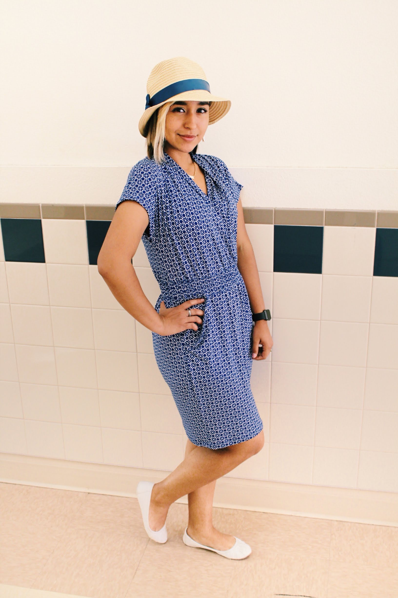

Bio
My name is Flor Ornelas, but I go by lily. I am a creative content producer who is able to convey meanigful stories through photography. I love caputring magical moments and using color correction to produce stunning visual results. I was introduced to the field of photography at a very young age by my grandpa who ran a successful local business here in El Paso, TX. Photography is my passion, so let me help you make the most of a special photo